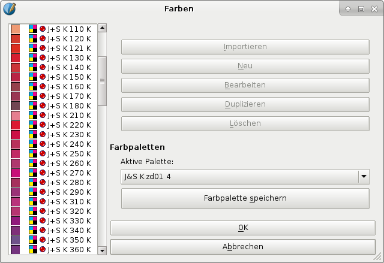

Die folgenden Farbpaletten wurden von dtp studio Oldenburg zur Verfügung gestellt. dtp studio ist auf Farbmessung und Softwareprodukte aus dem Farbenbereich spezialisiert. Darunter ist auch der Digitale Farbatlas, eine Software mit vielen Farbpaletten, die in Scribus verwendet werden können, aber auch mit weiteren nützlichen Features, wie Farbberechnungen für hunderte Farbsysteme und alle relevanten Farbräume.
Besonders wertvoll macht diese Farben, daß sie von Ingenieueren von dtp studio sorgfältig gemessen wurden. Mit den gemessenen Farben stellten sie für jeden Farbsatz fünf Paletten für verschiedene Ausgabemedien zusammen, so daß es fünf Dateien pro Satz gibt. Die Ausgabemedien sind:
bs00 im Namen.bs01 im Namen.kd01 im Namen.np01 im Namen.zd01 im Namen.Die Farbpaletten wurden von einer deutschen Firma erstellt, deshalb sind auch die Abkürzungen deutsch. »bs« steht dabei für »Bildschirm«, »kd« für »Kunstdruck«, »np« für »Naturpapier« oder »Normalpapier« und »zd« für »Zeitungsdruck«. Diese Namensgebung ist historisch gewachsen und keine Erfindung von dtp studio.
Um die Farben verläßlich im Vierfarbdruck einsetzen zu können, muß man die oben genannten Farbrofile installieren.
dtp studio hat noch wesentlich mehr Farbsysteme gemessen und Farbpaletten erstellt, die man alle einzeln online kaufen kann. Für die Zukunft hat das Unternehmen Pläne, Scribus direkt zu unterstützen, aber in der Zwischenzeit kann man die EPS-Paletten ohne Probleme herunterladen und systemweit oder »blockiert« installieren, wie es unter Farbpaletten verwalten beschrieben ist.
Falls man eine physische Referenz braucht, kann man ein CMYK-Buch kaufen, das die gesamten Farbsysteme von dtp studio beinhaltet, nicht nur die in Scribus enthaltene Auswahl, die weiter unten beschrieben wird.
|  |
| Name | Verkäufer | Beschreibung | Anzahl der Farben | Farbmodell | Schmuckfarbe |
| Alligator Collection 3000 | www.alligator.de | Art: Wandfarbe; Referenz des Verkäufers: Alligator Collection 3000 Diese Palette ist eventuell veraltet. Auf Palettes.de kann man nach Aktualisierungen schauen. |
208 | CMYK | Ja |
| Alligator Collection 4000 | www.alligator.de | Art: Wandfarbe; Referenz des Verkäufers: Alligator Collection 4000 Diese Palette ist eventuell veraltet. Auf Palettes.de kann man nach Aktualisierungen schauen. |
121 | CMYK | Ja |
| BannerRite | H. BRUNNER GmbH | Art: Polyesterfärbung; Referenz des Verkäufers: BannerRite | 9 | CMYK | Ja |
| Baumann System Prase | Paul Baumann Aue, Sachsen | Art: unbekannt; Referenz des Verkäufers: unbekannt “Baumanns Neue Farbtonkarte, System Prase” ist ein älteres Farbsystem, das von dem Maler Otto Prase entwickelt wurde. Es wurde 1912 erstmals von dem sächsischen Farbhersteller Baumann vorgestellt. Es enthält Farben und ihre Mischungen, sowie viele Informationen über Farbe und Farblehre, und gilt als der Beginn der modernen Farbsysteme. |
1372 | CMYK | Ja |
| Colortrend Wood Stains | Evonik Industries - Colortrend B.V. | Art: Holzfärbemittel; Referenz des Verkäufers: Colortrend Wood Stains | 46 | CMYK | Ja |
| DEUTSCHEpapier | Deutsche Papier Vertriebs GmbH | Art: Papierfarbe; Referenz des Verkäufers: Trendcolor, Colorline, Paradiso | 65 | CMYK | Ja |
| DRAKA POLYA | Art: unbekannt; Referenz des Verkäufers: unbekannt | 71 | CMYK | Ja | |
| GS Palette 141 Kunstdruck | Druckfarbenfabrik Gebr. Schmidt GmbH | Art: Tinte, Referenz des Verkäufers: unbekannt | 450 | CMYK | Ja |
| GS Palette 141 Naturpapier | Druckfarbenfabrik Gebr. Schmidt GmbH | Art: Tinte; Referenz des Verkäufers: unbekannt | 150 | CMYK | Ja |
| Heidelberger ip Oberputze | HeidelbergCement AG | Art: Putz; Referenz des Verkäufers: ip upper plaster | 130 | CMYK | Ja |
| ispo 840 | Ispo Putz- u. Farbenwerk GmbH & Co. KG | Art: Wandfarbe; Referenz des Verkäufers: ispo 840 | 840 | CMYK | Ja |
| ispo 2001 | Ispo Putz- u. Farbenwerk GmbH & Co. KG | Art: Wandfarbe; Referenz des Verkäufers: ispo 2001 | 400 | CMYK | Ja |
| J&S K | Jänecke+Schneemann Druckfarben GmbH | Art: Tinte; Referenz des Verkäufers: J+S Coated Paper Die Farben dieser Palette sind identisch mit HKS K, der Unterschied besteht darin, daß jeder Nummer eine Null vorangestellt ist. »J&S K 010 K« zum Beispiel entspricht »HKS K 1K«. Zusätzliche J+S-Farben, die es in HKS K nicht gibt, erkennt man an einer nachgestellten »1«, z.B. »J&S K 121 K«. Wenn man andere Varianten des Farbsatzes HKS braucht (z.B. HKS N) und sie nicht auf der HKS-Homepage findet, kann man entweder auf Palettes.de schauen, ob es dort ein J+S-Äquivalent gibt, oder man erwirbt den Digitalen Farbatlas. |
98 | CMYK | Ja |
| kera Colour Line | Art: unbekannt; Referenz des Verkäufers: unbekannt | 190 | CMYK | Ja | |
| KOBRA | Spraytec Group | Art: Wandfarbe; Referenz des Verkäufers: KOBRA | 52 | CMYK | Ja |
| Koessinger Keramik-Druck | Kössinger AG | Art: Keramik-Druckfarben; Referenz des Verkäufers: Koessinger Keramik-Druck | 72 | CMYK | Ja |
| Oracal 451 | ORAFOL-Klebetechnik GmbH | Art: Folien; Referenz des Verkäufers: Oracal Series 451 | 19 | CMYK | Ja |
| Oracal 6510 | ORAFOL-Klebetechnik GmbH | Art: Folien; Referenz des Verkäufers: Oracal Series 6510 | 7 | CMYK | Ja |
| OSMO Einmallasur | Osmo Holz und Color GmbH & Co.KG | Art: Einmallasur; Referenz des Verkäufers: unbekannt | 14 | CMYK | Ja |
| PRB Color | PRB | Art: Wandfarbe; Referenz des Verkäufers: unbekannt | 45 | CMYK | Ja |
| Sericol UCG Leuchtfarben | Fujifilm Sericol Deutschland GmbH | Art: Fluoreszierende Tinte; Referenz des Verkäufers: Universal Colour Guide | 10 | CMYK | Ja |
| Sericol UCG MatchingSystems | Fujifilm Sericol Deutschland GmbH | Art: Seritone Matching System; Referenz des Verkäufers: Universal Colour Guide | 10 | CMYK | Ja |
| swedex | SWEDEX | Art: Buchbinderpappe; Referenz des Verkäufers: Master-bind | 41 | CMYK | Ja |
| TAG Farbe erleben | Art: unbekannt; Referenz des Verkäufers: unbekannt | 160 | CMYK | Ja |